Как она выглядит?

Нажми на картинку, чтобы увидеть фотографию настоящей Помкады.
Как была сделана эта фотография? Остаётся загадкой!
Тем не менее теперь мы знаем, что Помкада имеет ярко-красную кожуру и сочную мякоть внутри.
Вкус помкады сладкий, с лёгкой кислинкой, а аромат насыщенный фруктовый.
Помкада богата витаминами и минералами, полезными для здоровья.
По этой причине, иногда в ней можно встретить «жителей».
Следующая история как раз об одном из них...
Помкадный червяк
 Червячок Пусикиллер и мухо-мальчик Кунилингист.
Червячок Пусикиллер и мухо-мальчик Кунилингист.
В одном тропическом лесу рос необычный фрукт — помкада.
Он был настолько сочным и вкусным, что каждый мечтал попробовать его.
Однажды в этот лес прилетел маленький мухо-мальчик по имени Кунилингист.
Он увидел этот удивительный фрукт и решил сорвать его.
Кунилингист подлетел к помкадному дереву и протянул руку, чтобы сорвать помкаду.
Но вдруг он заметил пожилого червячка Пусикиллера, который жил внутри фрукта.
Червячок был очень милым и дружелюбным, и Кунилингист решил не срывать помкаду.
Вместо этого он решил подружиться с червячком.
Так Кунилингист и Пусикиллер стали лучшими друзьями.
Они проводили вместе всё свободное время, играли и веселились.
Кунилингист даже придумал историю о том, как они вместе спасли лес от злого колдуна Холигейбоя.
С тех пор помкада стала символом дружбы и любви между людьми и животными.
А Кунилингист и Пусикиллер продолжали жить в этом лесу,
радуясь каждому дню, проведённому вместе.
❤
Помкада в кулинарии
Помкада — это экзотический фрукт,
который не только радует глаз своей яркой окраской и необычной формой,
но и обладает уникальными кулинарными свойствами.
Этот фрукт, произрастающий в далёких тропических лесах,
становится всё более популярным ингредиентом в современной кухне.
Помкада имеет плотную, но сочную мякоть, которая обладает сладким, слегка кисловатым вкусом.
Благодаря этому, помкада идеально подходит для приготовления различных десертов и напитков.
Её можно использовать в свежем виде,
добавлять в фруктовые салаты, делать из неё джемы и варенья,
а также использовать в качестве начинки для пирогов и пирожных.
Кроме того, помкада отлично сочетается с другими фруктами и ягодами,
что позволяет создавать разнообразные и вкусные блюда.
Например, её можно комбинировать с клубникой, ананасом или манго,
создавая освежающие фруктовые коктейли или смузи.
Помимо этого, помкада используется для приготовления соусов и заправок.
Её кисло-сладкий вкус отлично дополняет мясные и рыбные блюда,
придавая им особую пикантность.
Таким образом, помкада — это не только вкусный фрукт,
но и универсальный ингредиент,
который может стать настоящим украшением любого блюда.